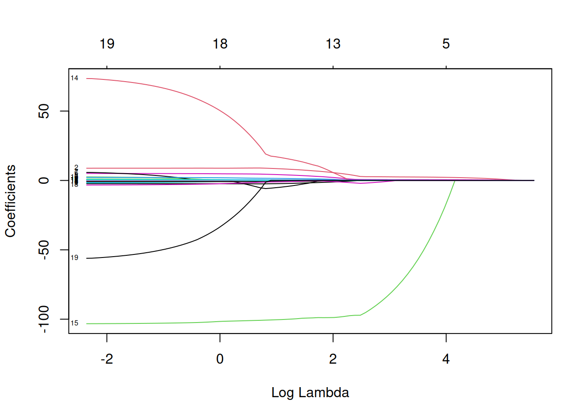
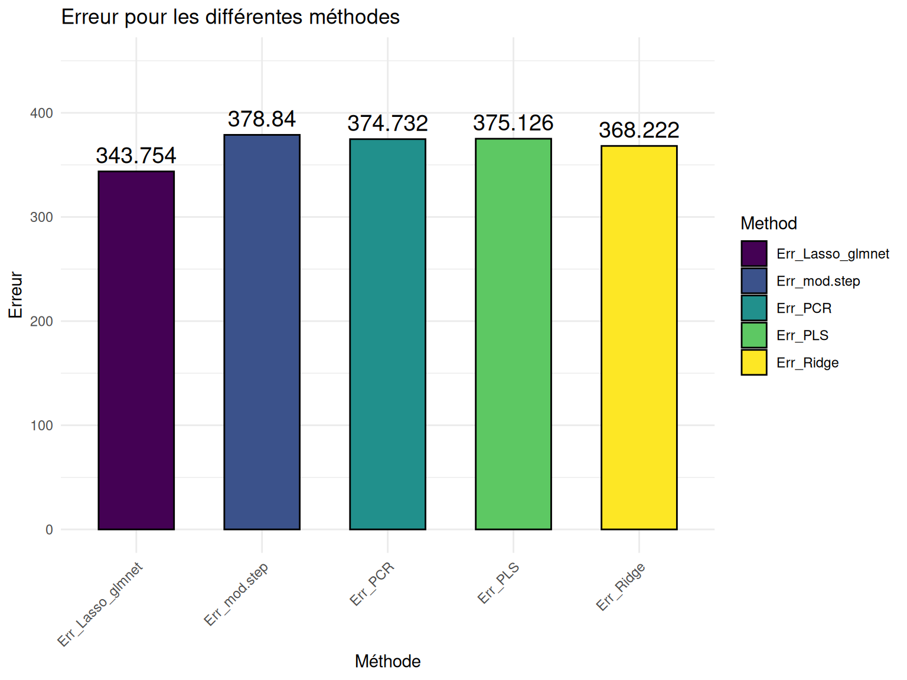
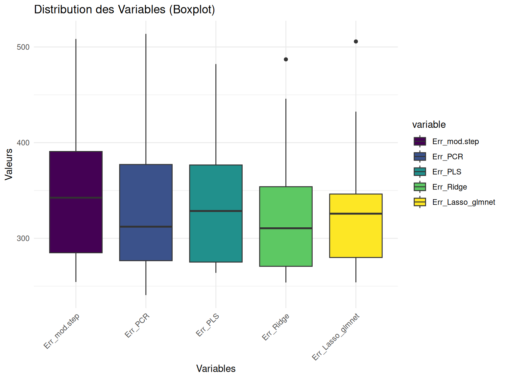

Show the code
# Données
library(ISLR) # Hitters data
library(dplyr) # manipulation des données
# Infrence
library(pls) ## PCR et PLSR
library(glmnet) ## regression pénalisée
# Plots
## ggplot
library(ggplot2)
library(gridExtra)# Données
library(ISLR) # Hitters data
library(dplyr) # manipulation des données
# Infrence
library(pls) ## PCR et PLSR
library(glmnet) ## regression pénalisée
# Plots
## ggplot
library(ggplot2)
library(gridExtra)set.seed(140400)Cette exercice est la suite direct de l’Exercice 6 où l’on a pu utiliser les méthodes de regressions avec reduction de dimension PCR et PLSR.
On va donc reprdre les mêmes données avec le même découpage en train et test.
Hitters_Without_NA <- Hitters %>% na.omit()
percent_to_draw <- 0.75
index_train <- sample(nrow(Hitters_Without_NA), size = floor(percent_to_draw * nrow(Hitters_Without_NA)))
Hitters_train <- Hitters_Without_NA[index_train, ]
Hitters_test <- Hitters_Without_NA[-index_train, ]NOtre objectif ici sera donc de compléter l’analyse de l’exercice 6 (lien)en utilisant cette fois ci les méthodes de regression pénalisée Ridge et Lasso (méthodes détaillées dans le 6 bonus lien).
Contrairement à la plupart des autres package R qui permettent de faire de l’apprentissage, le package glmnet n’autorise pas l’utilisation de formules. Il faut donc spécifier explicitement la matrice \(X\) et le vecteur \(y\).
On peut obtenir la matrice \(X\) et notamment le codage des variables qualitatives avec la fonction model.matrix.
X_train <- model.matrix(Salary ~ ., data = Hitters_train)[, -1]
Y_train <- Hitters_train$Salary
X_test <- model.matrix(Salary ~ ., data = Hitters_test)[, -1]
Y_test <- Hitters_test$SalaryEt ce n’est qu’après que l’on peut mettre en place la modélisation.
mod.R <- glmnet(X_train, Y_train, alpha = 0) Puis on peut visualiser les chemins de régularisation des estimateurs Ridge.
plot(mod.R, xvar = "lambda", label = TRUE)Résultats
Ici on voit l’évolution de nos coefficients \(\beta\) en fonction des diffrentes valeurs de \(\lambda\). Ainsi, sur la gauche on se retrouve dans la situation où il n’y a pas de pénalisation et donc nos coefficients sont les \(\beta\) de l’estimation par moindres carrés. Et donc plus \(\lambda\) va augmenter, plus on se retrouvera dans une situation où les coefficients vont tendrent vers 0.
mod.L <- glmnet(X_train, Y_train, alpha = 1) Puis on peut visualiser les chemins de régularisation des estimateurs Lasso.
plot(mod.L, xvar = "lambda", label = TRUE)Résultats
Ici on voit l’évolution de nos coefficients \(\beta\) en fonction des diffrentes valeurs de \(\lambda\). Ainsi, sur la gauche on se retrouve dans la situation où il n’y a pas de pénalisation et donc nos coefficients sont les \(\beta\) de l’estimation par moindres carrés. Et donc plus \(\lambda\) va augmenter, plus on se retrouvera dans une situation où les coefficients vont tendrent vers 0.
Maintenant que les modèles sont estimés avec plusieurs valeurs de \(\lambda\) possibles, il se pose la question du choix du bon paramètre.
Pour cela, on utilise la fonction cv.glmnet qui, comme son nom le laisse suggérer, permet d’effectuer une validation croisée pour notre modèle avec par défaut nfolds=10 (le nombre de pli pour le découpage de sous ensembles). Puis on peut faire un plot de l’objet.
ridgeCV <- cv.glmnet(X_train, Y_train, alpha = 0)
plot(ridgeCV)
On visualise ici les erreurs quadratiques calculées par validation croisée 10 blocs en fonction de \(\lambda\) (échelle logarithmique). Deux traits verticaux sont représentés :
celui de gauche correspond à la valeur de \(\lambda\) qui minimise l’erreur quadratique
celui de droite correspond à la plus grande valeur de \(\lambda\) telle que l’erreur ne dépasse pas l’erreur minimale + 1 écart-type estimé de cette erreur
D’un point de vu pratique, cela signifie que l’utilisateur peut choisir n’importe quelle valeur de lambda entre les deux traits verticaux.
A savoir que si l’on veut diminuer la complexité du modèle on choisira la valeur de droite.
On peut obtenir ces deux valeurs assez facilement.
cat(" Valeur minimale : ", ridgeCV$lambda.min, "\n", "Valeur maximale : ", ridgeCV$lambda.1se) Valeur minimale : 25.74237
Valeur maximale : 2457.234lassoCV <- cv.glmnet(X_train, Y_train, alpha = 1)
plot(lassoCV)On visualise ici les erreurs quadratiques calculées par validation croisée 10 blocs en fonction de \(\lambda\) (échelle logarithmique). Deux traits verticaux sont représentés :
celui de gauche correspond à la valeur de \(\lambda\) qui minimise l’erreur quadratique
celui de droite correspond à la plus grande valeur de \(\lambda\) telle que l’erreur ne dépasse pas l’erreur minimale + 1 écart-type estimé de cette erreur
D’un point de vu pratique, cela signifie que l’utilisateur peut choisir n’importe quelle valeur de lambda entre les deux traits verticaux.
A savoir que si l’on veut diminuer la complexité du modèle on choisira la valeur de droite.
On peut obtenir ces deux valeurs assez facilement.
cat(" Valeur minimale : ", lassoCV$lambda.min, "\n", "Valeur maximale : ", lassoCV$lambda.1se) Valeur minimale : 0.5546026
Valeur maximale : 76.80616On souhaite maintenant prédiction pour le jeu de données test.
Une première approche pourrait consister à réajuster le modèle sur toutes les données pour la valeur de \(lambda\) sélectionnée.
Cette étape est en réalité déjà effectuée par la fonction cv.glmnet. Il suffit par conséquent d’appliquer la fonction predict à l’objet obtenu avec cv.glmnet en spécifiant la valeur de \(lambda\) souhaitée.
pred.ridge_min <- predict(ridgeCV, newx = X_test, s = "lambda.min")
err_ridge <- sqrt(mean((pred.ridge_min - Y_test)^2, na.rm=T))pred.lasso_min <- predict(lassoCV, newx = X_test, s = "lambda.min")
err_lasso <- sqrt(mean((pred.lasso_min - Y_test)^2, na.rm=T))Ainsi on peut obtenir l’erreur de prédiction via le RMSEP pour les 2 modèles et les comparer avec les valeurs obtenues à l’exercice 6 (lien).
rmsep_pred_df <- data.frame("prediction Ridge" = err_ridge, "prediction Lasso" = err_lasso)
rownames(rmsep_pred_df) <- "RMSEP"
rmsep_pred_df prediction.Ridge prediction.Lasso
RMSEP 343.7543 373.2681err_vect = c(err_lasso, err_ridge, rmsep_mod.step, min(RMSEP(pls.fit_final,'CV')$val[,,]), min(RMSEP(pcr.fit_final,'CV')$val[,,]))
plot(err_vect, type = "h", main = "erreur pour les différentes méthodes")
points(err_vect, col=1:6)
legend("topright",
legend=c("Lasso_lars", "Lasso_glmnet", "Ridge", "mod.step", "pls", "pcr"),
pch = 1,
col = 1:6)
sessioninfo::session_info(pkgs = "attached")─ Session info ───────────────────────────────────────────────────────────────
setting value
version R version 4.2.1 (2022-06-23 ucrt)
os Windows 10 x64 (build 22631)
system x86_64, mingw32
ui RTerm
language (EN)
collate French_France.utf8
ctype French_France.utf8
tz Europe/Paris
date 2025-02-23
pandoc 3.2 @ C:/Program Files/RStudio/resources/app/bin/quarto/bin/tools/ (via rmarkdown)
─ Packages ───────────────────────────────────────────────────────────────────
package * version date (UTC) lib source
dplyr * 1.1.4 2023-11-17 [1] CRAN (R 4.2.3)
ggplot2 * 3.5.1 2024-04-23 [1] CRAN (R 4.2.3)
glmnet * 4.1-8 2023-08-22 [1] CRAN (R 4.2.3)
gridExtra * 2.3 2017-09-09 [1] CRAN (R 4.2.1)
ISLR * 1.4 2021-09-15 [1] CRAN (R 4.2.3)
Matrix * 1.6-4 2023-11-30 [1] CRAN (R 4.2.3)
pls * 2.8-3 2023-11-17 [1] CRAN (R 4.2.3)
[1] C:/Users/cleme/AppData/Local/R/win-library/4.2
[2] C:/Program Files/R/R-4.2.1/library
──────────────────────────────────────────────────────────────────────────────library(ISLR)
# Découpage des données ####
df = na.omit(Hitters)
dim(df)[1] 263 20set.seed(234)
pourcentage_a_tirer = 0.75
indices_train = sample(nrow(df), size = floor(pourcentage_a_tirer * nrow(df)))
df_train = df[indices_train, ]
dim(df_train)[1] 197 20df_test = df[-indices_train, ]
dim(df_test)[1] 66 20####
# Création des modèles ####
X.train = model.matrix(Salary~.,data=df_train)[,-1]
Y.train = df_train$Salary
mod.R <- glmnet(X.train, Y.train, alpha=0) ## Ridge
mod.R$beta[,1] AtBat Hits HmRun Runs RBI
1.656025e-36 5.820679e-36 2.170157e-35 9.728331e-36 1.033190e-35
Walks Years CAtBat CHits CHmRun
1.064338e-35 4.429311e-35 1.235428e-37 4.666557e-37 3.061051e-36
CRuns CRBI CWalks LeagueN DivisionW
9.529597e-37 8.740946e-37 9.575279e-37 -4.738583e-35 -1.791793e-34
PutOuts Assists Errors NewLeagueN
5.817502e-37 5.691328e-38 2.355126e-36 -4.492469e-35 mod.L <- glmnet(X.train, Y.train, alpha=1) ## Lasso
mod.L$beta[,1] AtBat Hits HmRun Runs RBI Walks Years
0 0 0 0 0 0 0
CAtBat CHits CHmRun CRuns CRBI CWalks LeagueN
0 0 0 0 0 0 0
DivisionW PutOuts Assists Errors NewLeagueN
0 0 0 0 0 par(mfrow=c(2,2))
plot(mod.R, label=TRUE, main = "Ridge")
plot(mod.R, xvar="lambda",label=TRUE, main = "Ridge")
plot(mod.L, label=TRUE, main = "Lasso")
plot(mod.L, xvar="lambda",label=TRUE, main = "Lasso")
par(mfrow=c(1,1))
####
# Sélectionn des paramètres de régularisation ####
ridgeCV <- cv.glmnet(X.train, Y.train, alpha=0)
lassoCV <- cv.glmnet(X.train, Y.train, alpha=1)
par(mfrow=c(1,2))
plot(ridgeCV, main = "Ridge")
plot(lassoCV, main = "Lasso")par(mfrow=c(1,1))
ridgeCV$lambda.min[1] 29.75282ridgeCV$lambda.1se[1] 1783.635lassoCV$lambda.min[1] 12.58319lassoCV$lambda.1se[1] 88.77192####
# Prédiction de la variable cible pour de nouveaux individus ####
X.test = model.matrix(Salary~.,data=df_test)[,-1]
Y.test = df_test$Salary
pred.ridge_min = predict(ridgeCV, newx = X.test, s="lambda.min")
# predict(ridgeCV, newx = X.test, s="lambda.1se")
err_ridge = sqrt(mean((pred.ridge_min - Y.test)^2, na.rm=T))
err_ridge[1] 396.5798# 345.5415
pred.lasso_min = predict(lassoCV, newx = X.test, s="lambda.min")
# predict(lassoCV, newx = X.test, s="lambda.1se")
err_lasso = sqrt(mean((pred.lasso_min - Y.test)^2, na.rm=T))
err_lasso[1] 402.3248# 349.1404
####
# Lasso avec lars ####
library(lars)Loaded lars 1.3lars.cv = cv.lars(X.train, Y.train)choix = lars.cv$index[which.min(lars.cv$cv)]
temp = lars(X.train, Y.train)
plot(temp) # chemin lassocoef(temp, s=choix, mode='fraction') AtBat Hits HmRun Runs RBI Walks
0.00000000 2.59390330 0.00000000 0.00000000 0.78377076 1.63049059
Years CAtBat CHits CHmRun CRuns CRBI
0.00000000 0.00000000 0.00000000 0.00000000 0.54921581 0.11932395
CWalks LeagueN DivisionW PutOuts Assists Errors
0.00000000 0.00000000 -73.04517633 0.19156413 -0.04324735 0.00000000
NewLeagueN
0.00000000 #le resultat est diff qu'avec glmnet parce que le choix de lambda est diff
#attention: les lambda ne sont pas normalise pareil dans glmnet et dans lars
#cela n'a pas de sens d'utiliser le lambda choisi par glmnet dans lars et inversement
#cf le poly section 4.3.3 pour une explication
lars.pred = predict(temp, X.train, s=choix, mode='fraction')$fit
err_lars = sqrt(mean((lars.pred - Y.test)^2, na.rm=T))Warning in lars.pred - Y.test: la taille d'un objet plus long n'est pas
multiple de la taille d'un objet plus courterr_lars[1] 446.5635# 499.6627
####
# Reprenons les modèles sélectionnés à l'Exo 6 ####
library(pls)
## PCR
res.pcr = NULL
for(i in 1:100){
# modele PCR
pcr.fit = pcr(Salary~., data = df, scale = TRUE, subset = indices_train, validation = "CV", segments = 10)
# RMSEP
RMSEP.cv = RMSEP(pcr.fit,'CV')$val[,,]
# On stocke les resultats
res.pcr = cbind(res.pcr, RMSEP.cv)
}
pcr.mean.cv = apply(res.pcr, MARGIN = 1, FUN = mean)
pcr.fit_final = pcr(Salary~., data = df, ncomp = which.min(pcr.mean.cv)-1, scale = TRUE, subset = indices_train, validation = "CV", segments = 10 )
min(RMSEP(pcr.fit_final,'CV')$val[,,])[1] 333.268# 345.3995
which.min(RMSEP(pcr.fit_final,'CV')$val[,,])17 comps
18 # 16 comps
# PLS
res.pls = NULL
for(i in 1:100){
pls.fit = plsr(Salary~., data = df, scale = TRUE, subset = indices_train, validation = "CV", segments = 10)
# RMSEP
RMSEP.cv = RMSEP(pls.fit,'CV')$val[,,]
# On stocke les resultats
res.pls = cbind(res.pls, RMSEP.cv)
}
pls.mean.cv = apply(res.pls, MARGIN = 1, FUN = mean)
pls.fit_final = plsr(Salary~., data = df, ncomp = which.min(pls.mean.cv)-1, scale = TRUE, subset = indices_train, validation = "CV", segments = 10 )
min(RMSEP(pls.fit_final,'CV')$val[,,])[1] 316.0469# 346.1336
which.min(RMSEP(pls.fit_final,'CV')$val[,,])11 comps
12 # 8 comps
# faire une selec forwise-stepwise avec critere BIC sur train puis rmsep sur test
mod0=lm(Salary~0, data=df_train)
mod_full=lm(Salary~., data=df_train)
mod.step = step(mod0, scope = formula(mod_full), trace = FALSE, direction = "both", k = log(nrow(Hitters_train)))
hat_df_test_mod.step = predict(mod.step, df_test)
rmsep_mod.step = sqrt(mean((hat_df_test_mod.step - df_test$Salary)**2))
rmsep_mod.step[1] 408.6114# 370.2405
####
err_vect = c(err_lars, err_lasso, err_ridge, rmsep_mod.step, min(RMSEP(pls.fit_final,'CV')$val[,,]), min(RMSEP(pcr.fit_final,'CV')$val[,,]))
plot(err_vect, type = "h", main = "erreur pour les différentes méthodes")
points(err_vect, col=1:6)
legend("topright",
legend=c("Lasso_lars", "Lasso_glmnet", "Ridge", "mod.step", "pls", "pcr"),
pch = 1,
col = 1:6)# Cette operation peut egalement etre repete pour avoir davantage que 10 decoupes.
K=10
n = nrow(df)
seg = cvsegments(n,K) #library(pls)
err_reg=NULL; err_pcr=NULL; err_pls=NULL; err_ridge=NULL; err_lasso=NULL; err_lars=NULL
for(i in 1:K){
cat(i)
test=seg[[i]]
reg=lm(Salary~., data=df, subset=-test)
reg0=lm(Salary~0,data=df, subset=-test)
resfwd=step(reg0, scope=formula(reg), direction="forward", k=log(n), trace=0)
reg.pred=predict(resfwd, df[test,])
err_reg[i]=sqrt(mean((reg.pred - df[test,19])^2, na.rm=T))
pcr.fit=pcr(Salary~., data=df,scale=TRUE,subset=-test,validation="CV",segments=10)
nbcomp=which.min(RMSEP(pcr.fit,'CV')$val[,,1:10])
pcr.pred=predict(pcr.fit,df[test,],ncomp=nbcomp)
err_pcr[i]=sqrt(mean((pcr.pred-df[test,19])^2,na.rm=T))
pls.fit=plsr(Salary~., data=df,subset=-test,scale=TRUE, validation="CV")
nbcomp=which.min(RMSEP(pls.fit,'CV')$val[,,1:10])
pls.pred=predict(pls.fit,df[test,],ncomp=nbcomp)
err_pls[i]=sqrt(mean((pls.pred-df[test,19])^2,na.rm=T))
train.mat=model.matrix(Salary~.,data=df[-test,])
train.mat=train.mat[,-1]
y=df[-test,19]
test.mat=model.matrix(Salary~.,data=df[test,])
test.mat=test.mat[,-1]
ytest=df[test,19]
ridge.cv=cv.glmnet(train.mat,y,alpha=0,lambda=seq(1,5000))
lambdachoisi=ridge.cv$lambda.min
ridge.pred=predict(ridge.cv,test.mat,s=lambdachoisi)
err_ridge[i]=sqrt(mean((ridge.pred-df[test,19])^2,na.rm=T))
lasso.cv=cv.glmnet(train.mat,y,alpha=1)
lasso.pred=predict(lasso.cv,test.mat,s=lasso.cv$lambda.min)
err_lasso[i]=sqrt(mean((lasso.pred-df[test,19])^2,na.rm=T))
lars.cv = cv.lars(train.mat, y)
choix = lars.cv$index[which.min(lars.cv$cv)]
temp = lars(train.mat, y)
lars.pred = predict(temp, train.mat, s=choix, mode='fraction')$fit
err_lars[i] = sqrt(mean((lars.pred - df[test,19])^2, na.rm=T))
}1Warning in lars.pred - df[test, 19]: la taille d'un objet plus long n'est pas
multiple de la taille d'un objet plus court2Warning in lars.pred - df[test, 19]: la taille d'un objet plus long n'est pas
multiple de la taille d'un objet plus court3Warning in lars.pred - df[test, 19]: la taille d'un objet plus long n'est pas
multiple de la taille d'un objet plus court4Warning in lars.pred - df[test, 19]: la taille d'un objet plus long n'est pas
multiple de la taille d'un objet plus court5Warning in lars.pred - df[test, 19]: la taille d'un objet plus long n'est pas
multiple de la taille d'un objet plus court6Warning in lars.pred - df[test, 19]: la taille d'un objet plus long n'est pas
multiple de la taille d'un objet plus court
7Warning in lars.pred - df[test, 19]: la taille d'un objet plus long n'est pas
multiple de la taille d'un objet plus court
8Warning in lars.pred - df[test, 19]: la taille d'un objet plus long n'est pas
multiple de la taille d'un objet plus court9Warning in lars.pred - df[test, 19]: la taille d'un objet plus long n'est pas
multiple de la taille d'un objet plus court10Warning in lars.pred - df[test, 19]: la taille d'un objet plus long n'est pas
multiple de la taille d'un objet plus courtboxplot(err_reg,err_pcr,err_pls,err_ridge,err_lasso, err_lars,
names=c('reg','pcr','pls','ridge','lasso', 'lasso_lars'),
col=2:8,
main="Erreurs des différentes méthodes")#abline(h = median(err_pcr), col='red')
mean(err_reg)[1] 339.1316mean(err_pcr)[1] 327.925mean(err_pls)[1] 343.9135mean(err_ridge)[1] 336.408mean(err_lasso) # moyenne pas toujours la plus basse (change en relancant)[1] 331.4097mean(err_lars)[1] 547.187# On ne constate pas de grandes differences.
# Finalement la reg avec selection forward (ici 6 var retenues) est pas mal.
# Ce n'est pas illogique :
# - le jeu de donnees n'est pas de tres grande dimension
# - les methodes de reduction de dimension et contraintes
# n'apportent pas grand chose